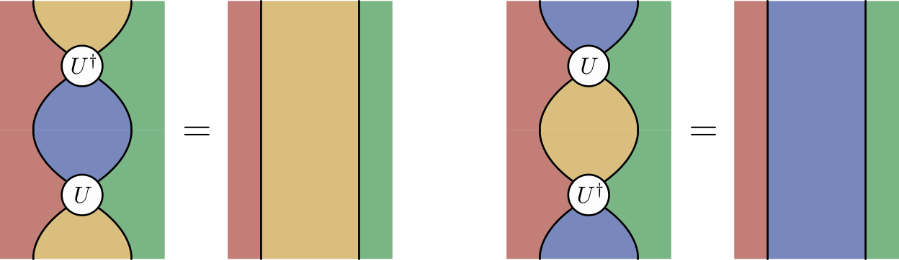
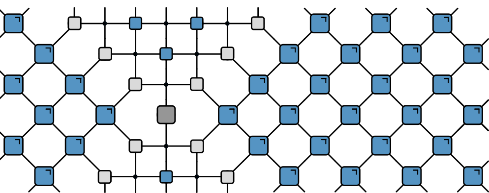

From Dual Unitarity to Biunitarity
A 2-categorical model for exactly-solvable many-body quantum dynamics arXiv:2302.07280 (J Phys A, to appear)
University of Cambridge
July 18, 2024
Local unitary dynamics
- Brickwork unitary circuit
Unitary circuits
\sum_{e,f} U^{\vphantom{\dagger}}_{ab, ef}U^{\dagger}_{ef,cd}=\delta_{ac}\delta_{bd}
Causal light cone
Causal light cone
Causal light cone
Causal light cone
Causal light cone
Outline
- Dual-unitary circuits
- Shaded calculus
- Biunitary circuits
- Solvable states
Outline
- Dual-unitary circuits
- Shaded calculus
- Biunitary circuits
- Solvable states
Dual unitary circuits
- What if propagation in space direction also unitary?
- … introduce dual unitary gates
Dual unitary gates1 2
Correlation functions
c_{\rho\sigma}(x,t)\sim \operatorname{tr}\left[\rho(0,t)\sigma(x)\right]
Correlation functions
c_{\rho\sigma}(x,t)\sim \operatorname{tr}\left[\rho(0,t)\sigma(x)\right]
Correlation functions
c_{\rho\sigma}(x,t)\sim \operatorname{tr}\left[\rho(0,t)\sigma(x)\right]
Correlation functions
c_{\rho\sigma}(x,t)\sim \operatorname{tr}\left[\rho(0,t)\sigma(x)\right]
Correlation functions
- Correlations on light cone \operatorname{tr}\left[\mathcal{U}^\dagger(t)\rho(0) \mathcal{U}(t)\sigma(x=t)\right]
- Correlations on light cone \operatorname{tr}\left[\mathcal{U}^\dagger(t)\rho(0) \mathcal{U}(t)\sigma(x=t)\right]
- Correlations on light cone \operatorname{tr}\left[\mathcal{U}^\dagger(t)\rho(0) \mathcal{U}(t)\sigma(x=t)\right]
- Correlations on light cone \operatorname{tr}\left[\mathcal{U}^\dagger(t)\rho(0) \mathcal{U}(t)\sigma(x=t)\right]
- Correlations on light cone \operatorname{tr}\left[\mathcal{U}^\dagger(t)\rho(0) \mathcal{U}(t)\sigma(x=t)\right]
- Correlations on light cone \operatorname{tr}\left[\mathcal{U}^\dagger(t)\rho(0) \mathcal{U}(t)\sigma(x=t)\right]
- Correlations on light cone \operatorname{tr}\left[\mathcal{U}^\dagger(t)\rho(0) \mathcal{U}(t)\sigma(x=t)\right]
Dual unitarity: motivation
Minimal model of local and unitary many-body dynamics with many interesting properties
Exact solvability
Maximally chaotic
Maximal entanglement velocity: spreads at fastest possible rate
Dual unitarity round-a-face1
- Circuits with similar properties built from 1-site 2-controlled gates
- Dual-unitarity: enforce unitarity when exchanging indices: \tilde U_{a,c} unitary where
(\tilde U_{a,c})_{b,d} \equiv (U_{b,d})_{a,c}
- Common framework for round-a-face (clockwork) and brickwork circuits?
Outline
- Dual-unitary circuits
- Shaded calculus
- Biunitary circuits
- Solvable states
“Ordinary” tensor network
Shaded tensor networks1
- Planar string diagram where some of the regions are shaded
Shaded region = index
Closed shaded region = implicit summation
- No shading corresponds to brickwork circuits
- Fully shaded corresponds to clockwork circuits
- No shading corresponds to brickwork circuits
- Fully shaded corresponds to clockwork circuits
Outline
- Dual-unitary circuits
- Shaded calculus
- Biunitary circuits
- Solvable states
Biunitarity
- Vertically unitary

- Horizontally unitary
- Biunitary vertex is both horizontally and vertically unitary
Dual unitarity from biunitarity: DU gates
Dual unitarity from biunitarity: DU clockwork
\sum_e (U_{a,c})^\dagger_{b,e} (U_{a,c})^\dagger_{e,d} = \delta_{bd}
- No shading corresponds to brickwork circuits
- Fully shaded corresponds to clockwork circuits
Biunitary circuits
- We consider lattices where every vertex is biunitary
- Gray background = region can be shaded or not
Heterogenous biunitary cicuits
- We can vary the shading pattern…
- …by introducing new elements
Biunitarity implies that these vertices correspond to quantum Latin squares
Matrix of vectors U_{a,b} with every row and column forming orthonormal basis
Quantum latin squares1
- Vertical unitarity determines the properties of the rows
- Horitzontal unitarity fixes same property for the columns
Heterogenous biunitary cicuits
- Introducing additional shading patterns


- …by introducing new elements
Complex Hadamard matrices
- A biunitary with two opposite shaded regions
Corresponds to complex Hadamard matrix: U^\dagger U = U U^\dagger = q\mathbb{1}, |U_{a,b}|=1
Represents either one-site unitary or two-site controlled phase
Classification of biunitaries
- Dual-unitary gates

- Quantum crosses
- Quantum Latin squares
- Complex Hadamard matrices
- Unitary error bases

Zoo of biunitary circuits
Dynamics of correlation functions
- Proof from dual-unitarity directly extends to biunitary circuits
- Vertical unitarity implies causal light cone
Dynamics of correlation functions
- Proof from dual-unitarity directly extends to biunitary circuits
- Vertical unitarity implies causal light cone
Dynamics of correlation functions
- Proof from dual-unitarity directly extends to biunitary circuits
- Vertical unitarity implies causal light cone
Dynamics of correlation functions
- Proof from dual-unitarity directly extends to biunitary circuits
- Now using horizontal unitarity…
Dynamics of correlation functions
- Proof from dual-unitarity directly extends to biunitary circuits
- Now using horizontal unitarity…
Dynamics of correlation functions
- Proof from dual-unitarity directly extends to biunitary circuits
- Now using horizontal unitarity…
Dynamics of correlation functions
- Proof from dual-unitarity directly extends to biunitary circuits
- …correlations vanish inside the light cone
Light-cone dynamics
- Light-cone correlation functions can be efficiently calculated
- … in the exact same way as for dual-unitarity
Light-cone dynamics
- Light-cone correlation functions can be efficiently calculated
- … in the exact same way as for dual-unitarity
Light-cone dynamics
- Light-cone correlation functions can be efficiently calculated
- … in the exact same way as for dual-unitarity
Complex Hadamard circuits1
- Construct circuit exclusively out of complex Hadamard matrices
- Depending on unit cell, can be interpreted as brickwork…
Complex Hadamard circuits1
- Construct circuit exclusively out of complex Hadamard matrices
- … or clockwork
- Biunitaries combine into biunitaries!
Compositions1
Outline
- Dual-unitary circuits
- Shaded calculus
- Biunitary circuits
- Solvable states
Solvable states
Dynamics so far restricted to initial (ultralocal) operators
What about initial states?
Class of solvable matrix product states introduced by Piroli et al.1
- Consistent with dual-unitarity if \mathcal{N} satisfies some (graphical) identities
Solvable tensors
- Start from tensor with arbitrary shading pattern
- Satisfies notion of horizontal unitarity
- Transfer matrix…
- …has a nondegenerate leading eigenvalue

Entanglement dynamics
- Initial state constructed from solvable tensors
- Evolve using biunitary circuit
Reduced density matrix
\rho_A(t)=\operatorname{tr}_{\bar A}\left[\ket{\Psi(t,\mathcal{N})}\bra\Psi(t,\mathcal{N})\right]
Reduced density matrix
\rho_A(t)=\operatorname{tr}_{\bar A}\left[\ket{\Psi(t,\mathcal{N})}\bra\Psi(t,\mathcal{N})\right]
Reduced density matrix
\rho_A(t)=\operatorname{tr}_{\bar A}\left[\ket{\Psi(t,\mathcal{N})}\bra\Psi(t,\mathcal{N})\right]
Reduced density matrix
\rho_A(t)=\operatorname{tr}_{\bar A}\left[\ket{\Psi(t,\mathcal{N})}\bra\Psi(t,\mathcal{N})\right]
Reduced density matrix
\rho_A(t)=\operatorname{tr}_{\bar A}\left[\ket{\Psi(t,\mathcal{N})}\bra\Psi(t,\mathcal{N})\right]
Reduced density matrix
\rho_A(t)=\operatorname{tr}_{\bar A}\left[\ket{\Psi(t,\mathcal{N})}\bra\Psi(t,\mathcal{N})\right]
- Biunitary circuits exactly thermalize \rho_A(t\geq |A|/2)\propto \mathbb{1}
Maximal entanglement entropy growth
Solvable initial states
- No shading: returns solvable matrix product state of Piroli et al.1
- Fully shaded = new solvable initial state for clockwork circuits
Solvable initial states
- Horizontal unitarity corresponds to unitarity of \mathcal{N}^{(b)}
Conclusions
Dual-unitary models are a class of exactly solvable models for many-body dynamics
We embed them in a general class of biunitary circuits
Biunitaries compose into biunitaries (Dual-unitary gates, quantum crosses, unitary error bases, complex Hadamard matrices, quantum Latin squares)
Any graphical proof for dual-unitarity directly extends to biunitarity